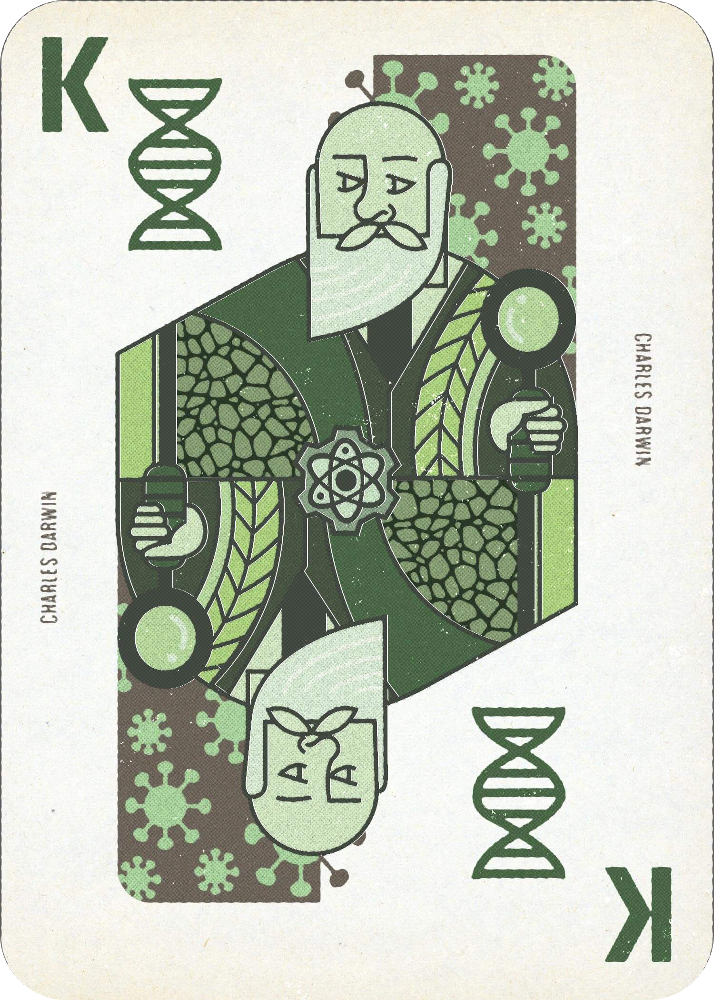
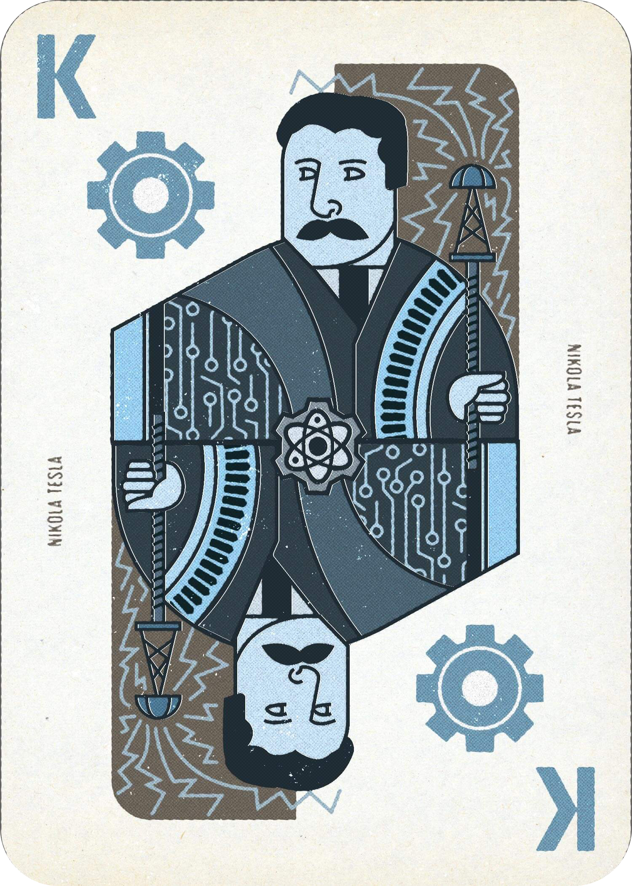
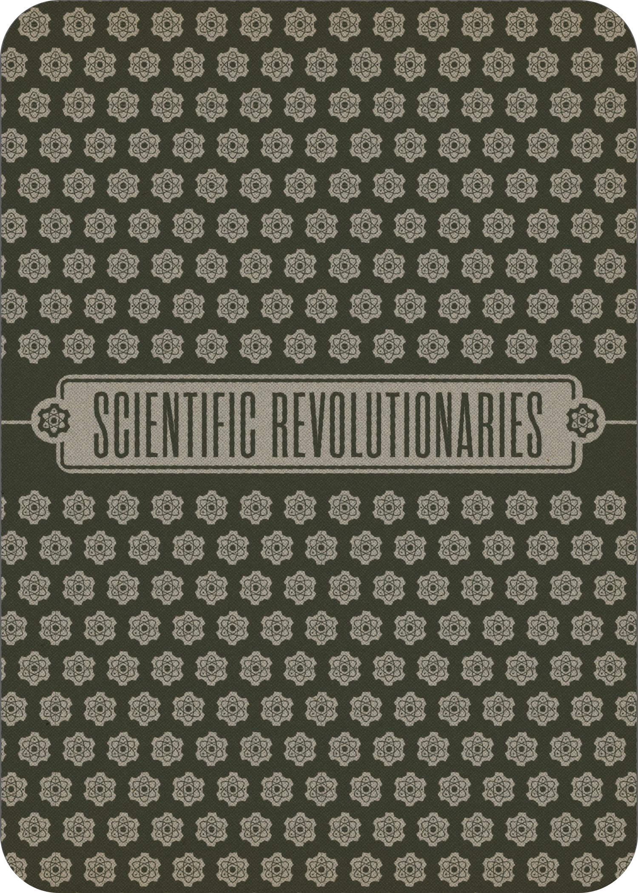

Sketch placeholder
Add concept sketches, thumbnails, or iteration sheets here.
Case Study · Design · 2025
This playing card deck celebrates the Scientific Revolution by honoring pioneering figures across Biology, Chemistry, Physics, and Technology. The challenge was to merge historical accuracy with engaging visual design—transforming educational content into a tangible artifact that respects intellectual legacy while maintaining the playful structure of traditional playing cards.






Add concept sketches, thumbnails, or iteration sheets here.
Add studio, making-of, or work-in-progress images here.
Add presentation mockups, close-ups, or alternate views here.
Each suit represents a distinct scientific discipline, with face cards depicting historical figures like Darwin, Curie, Newton, and Tesla. Custom vector illustrations combine portrait elements with discipline-specific iconography—molecular structures, circuit patterns, evolutionary symbols, and celestial mechanics. The color palette differentiates each discipline while maintaining visual cohesion across the entire deck.
The finished deck functions as both a playable card set and an educational artifact. By embedding scientific figures into a familiar format, the design demonstrates how information design can make history tangible and engaging while showcasing technical illustration skills and complex visual hierarchy.